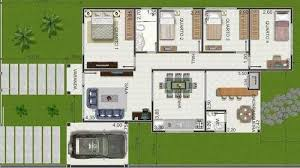

Disciplinas
-
PROGRAMAÇÃO ORIENTADA A OBJETOS-T01-2024-1 Concluído
Materiais
Vídeo 2 - Programação Orientada a Objetos - Classes e Objetos. sendProfessor ministrante: Júlio Cezar Estrella.
Conteúdo
Classes e Objetos.
Roteiro:
- Conceitos Básicos
- Objetos.
- Classes.
- Tipos de Acessos.
- Pilares da POO.
Objetos.
- Trata-se de entidade que é capaz de salvar estado (informação) e que oferece um conjunto de operações (comportamentos) para verificar ou alterar esse estado
- Em um modelo de sistema orientado a objetos:
- Os componentes dos sistemas são representados por objetos
- Objetos representam entidades reais
- Associamos aos objetos:
- Estado: É definido pelas propriedades, ou seja, os atributos que ele possui e pelos valores que tais propriedades assumem
- Comportamento: É definido pela forma como o objeto reage, quando seu estado muda e também o relacionamento com os outros objetos.
- Identidade: cada objeto é único.
- Os objetos indicam o quão capaz é o sistema de guardar informações sobre o que está sendo abstraído e em seguida interagir com ele.
- São entidades mais próximas do mundo real, ou seja o que conseguimos visualizar.
- Os objetos são uma forma de diminuir o gap semântico.
Quando falamos de objetos um conceito importante é o encapsulamento.
- Ele traz modularidade e ocultação da informação (information hiding).
- O encapsulamento cria um pacote de software cujos métodos e variáveis são relacionados.
- A information hiding indica que, a única parte do objeto que pode ser acessada pelo mundo externo, deve ser feita por meio de operações.
Exemplos:
- Lâmpada
- Atributos: ligada/desligada
- Métodos: ligar/desligar
- Pessoa
- Atributos: nome, idade, altura
- Métodos: falar, comer, morder, dormir
- Carro
- Atributos: cor, tamanho, velocidade
- Métodos: ligar, desligar, acelerar, frear
Resumindo ...
Exemplo:
- Um molde de um quadro de pintura
- Ele é a nossa classe ou tipo e define o formato, o tamanho, as cores e outras características dos objetos fabricados, ou seja, os quadros
- A classe é um molde para os objetos
- O molde é sempre o mesmo, mas os objetos gerados por ele são diferentes, tendo características variadas, embora respeite a estrutura do molde (classe)
Imaginem um molde de um quadro de 30 cm x 30 cm
- O Quadro1 pode ser azul
- O Quadro2 pode ser branco com verde
Tanto o quadro1 quanto o quadro2 são objetos do tipo quadro.
- Os quadros se diferenciam neste exemplo pela característica cor
- Poderiam se diferenciar também pelo material (madeira, plástico, alumínio)
Classes
- As classes são moldes que permitem a criação de novos objetos e descrevem as características comuns de vários objetos
- Importante mencionar o termo instância, muito utilizado em POO
- Instâncias
- Objetos que pertencem a uma classe. Eles são chamados de instâncias de classes
- Uma classe descreve um conjunto de objetos semelhantes.
- Classe x Objeto
- Classe: é apenas uma abstração
- Objeto: é uma entidade concreta
- No contexto da programação:
- Quando falamos em definir uma classe significa:
- Tornar formal um tipo de dado e todas as operações que têm associação a este tipo
- Quando falamos em definir um objeto significa: criar variáveis do tipo definido
Classes e Objetos.
Classe:
Objeto:
- Métodos.
- Operações que podem ser executadas pelos objetos.
- Valores dos Atributos.
- São acessados (em geral) por meio dos métodos definidos pela classe.
- Construtores.
- Métodos com o mesmo nome da classe e não possui retorno.
Tipos de Acessos.
- Os atributos e métodos são membros de uma classe.
- Para definir o tipo de acesso aos seus membros, utilizamos os modificadores de acesso:
- Public: Atributo ou método da classe que pode ser acessado por todas as entidades do sistema.
- Protected: Atributo ou método que pode ser acessado somente por classes da mesma hierarquia e mesmo pacote.
- Private: Atributo ou método da classe que pode ser acessado somente por métodos da própria classe.
Importante: Escolher os tipos de acesso acabar por definir o escopo dos métodos e atributos.
- Frequentemente os atributos são private. Desta forma, os métodos da própria classe é que são responsáveis por modificar e recuperar o estado dos atributos.
- Tais métodos são públicos (como os setters e getters).
- Isso ajuda na estabilidade e segurança no acesso ao atributo, além de ocultá-lo (information hiding).
Pilares da POO.
São princípios básicos que precisamos seguir:
- Abstração.
- Encapsulamento.
- Herança.
- Polimorfismo.
- Mensagens.
Abstração:
Encapsulamento:
Herança:
Polimorfismo:
- É um princípio em que um organismo pode surgir de formas distintas (conceito oriundo da Biologia). Indivíduos da mesma espécie possuem características similares.
- Em POO, a mesma operação (método) comporta-se de modo diferente nas diferentes classes de uma hierarquia.
Mensagens:
- Quando um objeto emissor transmite uma requisição para um objeto receptor para que este execute um comportamento (método) desejado.
- O objeto receptor precisa já ter os métodos definidos.
- Os métodos respondem a um retorno à chamada.
Referências.
1. Java Como Programar: Paul Deitel & Harvey Deitel - 10ª Edição
2. Java Como Programar: Paul Deitel & Harvey Deitel - 8ª Edição